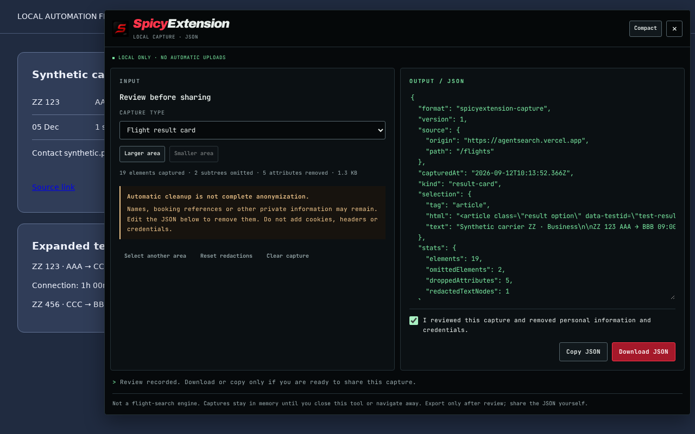
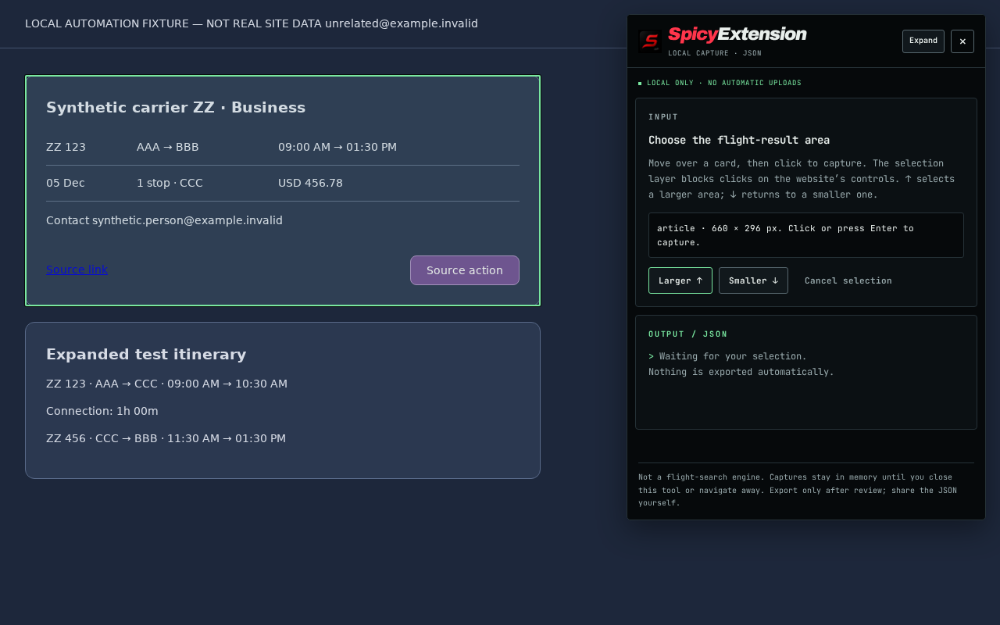
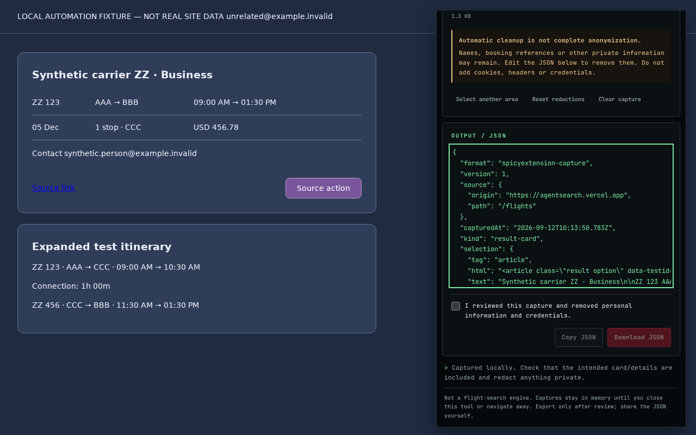
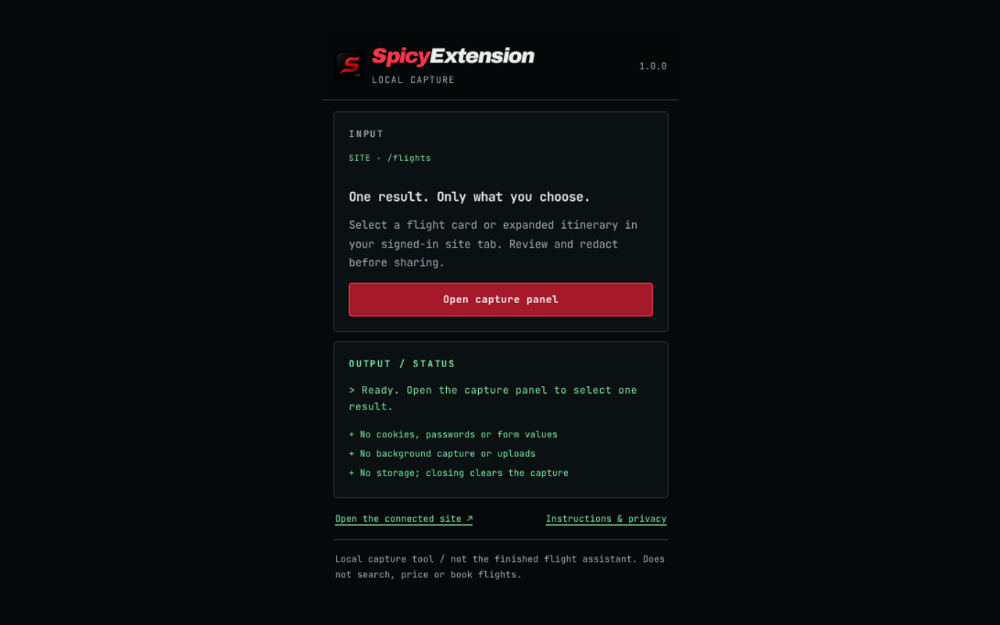

Local only · no automatic uploads
One result.
Only what you choose.
SpicyExtension captures exactly one result area that you select on a page you are already signed in to, shows it to you as plain JSON, and lets you review and edit it before anything is exported. Nothing is uploaded, nothing is stored, and nothing is captured in the background.
- no cookies or passwords
- no storage
- no background capture
- Manifest V3

How it works
You point at one card. You read what was collected. Then you decide.
A screenshot is not machine-readable, and a full page dump collects far more than you meant to share. This sits in between: a single selected area, in plain JSON, that you can edit before it goes anywhere.
Select one area
Open the capture panel from the toolbar and choose Select a result area. A selection layer outlines what you are pointing at and shows its size. Larger and Smaller, or the arrow keys, adjust the boundary; Escape cancels. That layer also stops the click from activating the website's own buttons.
Review and redact
The selected subtree becomes plain JSON in the OUTPUT pane — visible text plus a short allowlist of structural attributes. It is text, never rendered or executed, and you can edit any part of it. Change the capture type or reset your redactions at any point.
Export it yourself
Download JSON and Copy JSON stay disabled until you tick the review confirmation, and any further edit clears that confirmation again. The file is written by you, to your machine. Nothing is transmitted.
Privacy
Built so there is nowhere for your data to go.
This is a design property, not a promise: the extension ships with no network code at all, and
its packaged pages set connect-src 'none', so they cannot make requests even if
something tried.
What it never touches
- Cookies, local storage and session storage
- Passwords and any form field values
- Your login — that stays with Chrome and the site
- Any site other than the one host it declares
- The page URL's query string and fragment
What it will not do
- Upload, sync or phone home — there is no network client
- Save captures; memory only, discarded on close
- Read the page on load or capture in the background
- Run remote code; everything is bundled at build time
- Show ads, track you or collect analytics
Stripped out of every capture
- Scripts, styles, frames and embedded media
- Hidden and aria-hidden subtrees
- Form controls and their values
- Link destinations, resource URLs and element IDs
- Event handlers and arbitrary data attributes
Kept, so the structure is useful
- The visible text of the area you selected
- Class names, roles and accessibility labels
- Datetime and test-ID attributes
- The origin and route only — never the full URL
- Counts of what was captured, omitted and redacted
Redaction is best effort, not complete anonymization. Email addresses, URLs, bearer tokens and common credential patterns in the visible text are replaced automatically — but names, booking references, phone numbers or unusual identifiers can survive. That is exactly why export stays locked until you confirm you have read the JSON. Once a file is downloaded or copied, it is yours to look after; the extension cannot reach it afterwards.
Full detail is in the privacy policy.
Permissions
One host. Nothing else requested.
Chrome asks for a reason behind every permission. Here is the complete list, which you can
check against manifest.json in the public repository.
| Permission | Status | Why |
|---|---|---|
host_permissionshttps://agentsearch.vercel.app/* |
Requested | The only site this extension runs on. A dormant listener on its results routes lets the toolbar button open the capture panel in the tab you are already signed in to. |
tabs | Not requested | Not needed. The popup only checks whether the active tab is a supported page. |
storage | Not requested | Nothing is ever persisted. |
cookies | Not requested | Authentication is never read or copied. |
downloads | Not requested | Exports use an ordinary link you click yourself. |
scripting | Not requested | No code is injected into arbitrary pages. |
web_accessible_resources | None | No extension resource is exposed to web pages. |
Screenshots
The actual interface.
These are unretouched captures of the built extension running against a synthetic test page — no real account, search or inventory appears in them.



Install
Verify the build yourself.
The extension is open source. The exact package that gets uploaded to the Chrome Web Store is committed to the repository alongside its SHA-256 checksum, so you can confirm that what ships matches the code.
From the Chrome Web Store
The listing is being prepared. Until it is live, use the packaged build below, or watch the repository for the published link.
From source
Clone the repository, run npm ci then npm run check, and load
dist/spicyextension through Load unpacked at
chrome://extensions with Developer mode enabled.
Scope
What this version is — and what it is not.
Version 1.0.0 is a local capture tool. It records the structure of one result area you select, so that structure can be studied. It is deliberately narrow, and the extension's own help page states the same thing rather than implying features that do not exist yet.
It is not a screenshot tool, and it does not search, price, book or supply flight inventory. It reads no API and replays no authenticated request.